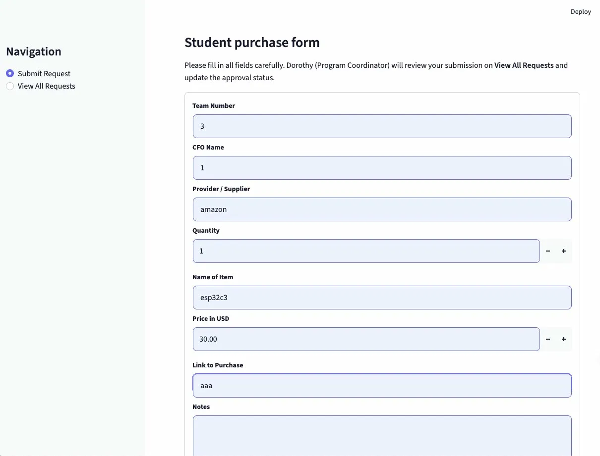
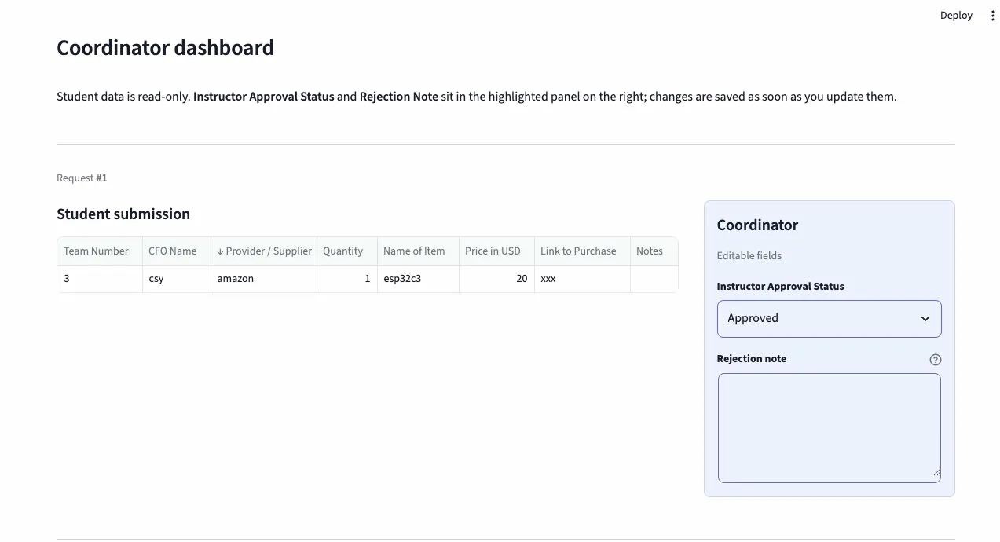

Dorothy, Program Coordinator, Student Purchasing, GIX
| Step | Action | Time Required | Where Info Lives | What Could Go Wrong |
|---|---|---|---|---|
| 1 | Student decides they need to purchase an item | Instant | Student's memory | Student doesn't know what information to include |
| 2 | Student submits purchase request | A few minutes | Email / manual form | Incomplete info — Dorothy has to follow up repeatedly |
| 3 | Dorothy receives request and logs it into Excel | A few minutes per entry | Excel spreadsheet | Manual entry errors, inconsistent formatting |
| 4 | Dorothy sends to instructor for approval | 3 days – 2 weeks | Slow turnaround, Dorothy has no visibility on status | |
| 5 | Dorothy receives approval, updates Excel | A few minutes | Excel spreadsheet | Easy to miss updates, status not transparent to students |
| 6 | Dorothy processes the purchase (places order) | Varies | Various platforms | Order backlog during peak periods (up to 150/month) |
"When GIX students and Dorothy (Program Coordinator) need to submit and track purchase requests for Launch Projects, they currently exchange information manually and maintain a separate Excel spreadsheet, which causes incomplete submissions, slow approval cycles of 3 days to 2 weeks, and a heavy manual workload for Dorothy especially during peak periods of up to 150 orders per month."
App idea: A simple purchase request form for GIX students with fields for item name, price, and supplier.
Plain English description: "Build a simple Streamlit app for GIX students to submit purchase requests with fields for item name, price, and supplier."
Claude (chatbot) result: Claude generated code as a text block in the chat window. I would need to manually create a new file, copy-paste the code, and save it myself. The code worked but required extra steps to actually use it.
Cursor result: Cursor directly created app.py in my project folder, wrote the code into the file, and even ran a verification command. No copy-pasting needed — the file was ready to run immediately.
Comparison: Cursor feels more "buildable" because it acts directly on the project files. A chatbot gives you code as text, which is useful for understanding but requires manual steps to deploy. Cursor skips those steps and behaves more like a coding assistant than a text generator.
Prompt: Build a Streamlit app called "GIX Student Purchase Request System" that helps GIX students submit purchase requests and allows Dorothy (Program Coordinator) to track them. The app should have two pages: Submit Request (a form with all required fields) and View All Requests (a table showing all submissions).
What AI produced: Created app.py with two-page navigation using st.sidebar, a complete submission form with all 9 fields, and a dataframe view of all requests. Data is saved to purchase_requests.json.
Did it work first try? Yes, app ran successfully on first try.
Prompt: Update the app so that on the Submit Request page, remove the Instructor Approval Status field. All new submissions automatically get status "Pending". On the View All Requests page, add a dropdown next to each request that lets Dorothy change the approval status.
What AI produced: Removed the field from the student form, set default status to "Pending", added editable dropdown on the coordinator view.
Did it work first try? Yes.
Prompt: Add a Rejection Note text field next to the approval status for each request. Make Dorothy's editable fields visually distinct with a light blue background so she can clearly see which fields she can edit.
What AI produced: Added a blue-background "Coordinator" panel on the right side of each request with editable Approval Status dropdown and Rejection Note text area, clearly separated from the read-only student submission table on the left.
Did it work first try? Yes.
Prompt: Create a .streamlit/config.toml file with a professional indigo theme, white background, and sans-serif font.
What AI produced: Created .streamlit/config.toml with custom colors. Had to fix a NameError (border syntax error in app.py) and a layout issue with the Price in USD field.
Did it work first try? No. Got a NameError on line 68 of app.py. Fixed by pasting the error back to Cursor. Also had to fix input field width display issue.
Prompt: No AI used. Manually edited the submission instructions text in render_submit_page().
What I changed: Changed "Fill in the details below" to "Please fill in all fields carefully" to make instructions clearer for students.
Did it work? Yes, app ran successfully after the change.
Function I studied: render_submit_page()
My understanding in my own words: The render_submit_page() function draws all the form inputs on the page and waits for the user to click Submit. Only when submitted is True does it save the data to the JSON file.
Color Contrast: PASS - Text color: rgb(49, 51, 63) - Background color: rgb(255, 255, 255) - Contrast ratio exceeds 4.5:1 standard (WCAG AA) - Using Streamlit default theme, no custom colors needed
Semantic Headings: PASS - st.title() used once for main page title - st.header() used for major sections - st.subheader() used for subsections - Heading order is correct, no levels skipped
1. What surprised you about AI-assisted coding? I was surprised by how quickly Cursor completed the entire app. It not only generated the code but directly created and edited the files in my project folder, which felt very different from just getting a text response from a chatbot.
2. What did the AI get wrong? Sometimes the visual layout was slightly off — for example, input fields were not displaying at full width, and the initial color theme looked unprofessional. Some features also didn't match real user habits, like having the approval status on the student form instead of the coordinator dashboard.
3. Could you explain your code? For most parts, yes. After studying render_submit_page(), I understood how Streamlit draws form inputs and only saves data when the Submit button is clicked. There are still some advanced parts I would need more time to fully understand.
4. What did you learn from the interview? Understanding the user's needs is crucial — it directly shaped what features to build and what to prioritize. Without talking to Dorothy, I might have built a generic form that missed key details like the instructor approval workflow and the volume of requests she handles each month.
+----------------------+ +----------------------+ +----------------------+
| INPUT | -> | PROCESS | -> | OUTPUT |
+----------------------+ +----------------------+ +----------------------+
| - Team Number | | - Python collects | | - Success message |
| - CFO Name | | and validates data | | shown to student |
| - Supplier | | - Saved to JSON file | | - Table of requests |
| - Quantity | | - Reads JSON on load | | shown to Dorothy |
| - Item Name | | - Overwrites JSON | | - Editable Approval |
| - Price in USD | | when Dorothy edits | | Status & Note |
| - Link to Purchase | | | | - Toast notification |
| - Notes | | | | when saved |
| - Submit button | | | | |
| - Dorothy: Approval | | | | |
| - Dorothy: Note | | | | |
+----------------------+ +----------------------+ +----------------------+
^ |
+------ Feedback: Dorothy updates, student resubmits --+
| Field | Your Entry |
|---|---|
| Decision | Put everything in one file (app.py) |
| Alternatives considered | Split into multiple files: data.py for JSON logic, ui.py for pages, main.py as entry point |
| Why you chose this | Cursor generated a single file by default. With ~385 lines it is still manageable for a first version |
| Trade-off | If 5 more features are added, the file could grow to 600+ lines and become very hard to navigate and debug |
| When would you choose differently? | If the app grows significantly or needs multiple people working on different parts at the same time |
| # | Feature Tested | Action You Took | Expected Result | Actual Result | Pass/Fail |
|---|---|---|---|---|---|
| 1 | Submit Request form | Filled in all fields (Team Number, CFO Name, Supplier, Quantity, Item Name, Price, Link, Notes) and clicked Submit | Success message appears and entry is saved | Green success message appeared and entry showed up correctly in View All Requests | Pass |
| 2 | View All Requests table | Clicked "View All Requests" in sidebar navigation | Table displays all submitted requests with all fields visible | Table displayed correctly with all columns and data | Pass |
| 3 | Coordinator Approval Status | Changed approval status dropdown from Pending to Approved on Dorothy's coordinator panel | Status updates and toast notification appears | Status changed to Approved and toast notification "Coordinator updates saved" appeared at bottom of screen | Pass |


Color Contrast: PASS - Text color: rgb(49, 51, 63) - Background color: rgb(255, 255, 255) - Contrast ratio exceeds 4.5:1 standard (WCAG AA)
Semantic Headings: PASS - st.title() used once for main page title - st.header() used for major sections - st.subheader() used for subsections - Heading order is correct, no levels skipped
+----------------------+ +----------------------+ +----------------------+
| INPUT | -> | PROCESS | -> | OUTPUT |
+----------------------+ +----------------------+ +----------------------+
| - User types keyword | | - Filter RESOURCES | | - Resource cards |
| in search bar | | list by category | | showing name, |
| | | - Filter by search | | category, |
| - User selects | | keyword (checks | | location, hours, |
| category from | | name and | | description, |
| sidebar dropdown | | description) | | free to use |
| (All, Makerspace, | | - If no filters, | | |
| Study Space, | | show all 8 | | - Results count |
| Printing, | | resources | | ("X found") |
| Storage, Food, | | | | |
| Other) | | | | - Warning message |
| | | | | if no results |
+----------------------+ +----------------------+ +----------------------+
^ |
+---- Feedback: User refines search or changes --------+
category filter
RESOURCES = hardcoded list of 8 dictionaries in E-wayfinder.py
What happens: When the search bar is empty and category is "All", all 8 resources are shown. Why it matters: The app should not crash or show 0 results when no search term is entered. This is the default state every user sees when they first open the app. Result: Pass — all 8 resources display correctly with empty search.
What happens: When user types a keyword that matches no resource (e.g. "swimming pool"), the app shows a warning message instead of crashing. Why it matters: Users will inevitably search for things that don't exist. The app must handle this gracefully instead of showing a blank page with no explanation. Result: Pass — warning message "No resources match your search" appears correctly.
Located in E-wayfinder.py at the top of the file:
assert all(
REQUIRED_FIELDS.issubset(r.keys()) for r in RESOURCES
), "Some resources are missing required fields!"
This checks that every resource in the list has all 6 required fields (name, category, location, hours, description, free).
"Create a new file called wayfinder.py. Build a Streamlit app called GIX Campus Wayfinder that helps new GIX students find campus resources. Include a data structure with 8 resources, a search bar, category filter, resource cards, and an assert statement for data integrity."
"Add a search button next to the search bar so users can click to search instead of only pressing Enter. The button should have a search icon so users immediately know what it does."
What changed and why: The initial prompt generated a plain text input where users could only search by pressing Enter — this is not intuitive for all users. Adding a clickable 🔍 Search button makes the interaction clearer and more user-friendly, especially for users who are not familiar with pressing Enter to submit a search.